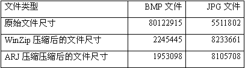

|
|
| 当前位置：电脑报电子版 > 1999 年 > 45 期 > 软件世界 > 图片文件的压缩与传送 |
| 《 图片文件的压缩与传送 》 |
一、常用图像格式 我们一般在Windows系统中经常使用到的图像格式，不外乎BMP、GIF、JPG等几种，BMP是非压缩的位图图像格式，这种图像格式比较简单，图像没有失真，使用上也比较容易。但BMP占用的磁盘空间太大，有时一张高保真的照片，可能要占用几十兆的硬盘空间。因此我们常常使用压缩图像格式，压缩图像格式种类很多，但我们一般使用的压缩图像格式主要有两种JPG或GIF。二、JPG和GIF压缩图像格式 JPG压缩图像格式是一种适应性很广的压缩格式，JPG图像只有BMP图像的1/5到1/10，而且这种压缩文件格式能够最大限度地保留图像的颜色（24位色）。JPG图像的压缩比还可以调节，但会造成一些图像信息的损失。GIF压缩图像格式是一种无损压缩格式，这种格式压缩比在某些情况下非常高，但某些情况下又赶不上JPG，而且GIF图像格式只能有256色，不能有真彩色。 三、JPG和GIF格式比较 但GIF和JPEG哪个更好一点呢？这就要看到底是什么图像以及你的使用目的。如果图像使用了很多颜色，而且不同颜色相互交叉，例如照片、复杂绘画，最好是采用JPG格式。多颜色图形采用JPG格式是因为JPG图像可以有上千万种颜色（24位真彩色），而GIF只局限于256种颜色。另外JPG允许压缩比大一些。对于比较大的图形，也宜采用JPG。 如果所用图像的颜色比较简单，比如图标、漫画、程序界面等，应采用GIF格式，在这种情况下GIF有相当高的压缩率。当图像上有大片的颜色时，也应使用GIF。另外，GIF可以进行交织处理，交织处理的GIF图形可以先以低清晰度全部下载，然后再慢慢变清晰，而JPG只是一行一行地下载。GIF可以做成透明的，还可以做成动画，这些JPG都作不到。 四、转换图像格式 图像格式种类繁多，也各有优缺点，为了需要，常常进行各种图像格式的转换。在我们必备的ACDSee看图软件中，就可以对图像进行转换，但转换的格式较少。《电脑报》1999年第40期介绍的《玩转图像的小工具——Image Converter》就是目前最好的图像转换工具之一。本期《贝贝学苑》介绍的Konvertor则是一个超强的图像转换工具。五、优化图像 JPG和GIF等压缩格式的图像，常常还有优化的余地，也就是说进行更好的压缩。一般网页图像都需要通过优化，以减小整个网页的大小。如果用E－Mail发送JPG和GIF图像文件，也可以优化优化。本期《贝贝学苑》就介绍了两个优化软件。六、传送图像文件最优方法 其实，采用BMB格式的图像文件，再压缩成ZIP文件，是通过E－mail、软盘传送图像最优的方法。笔者对BMP、JPG等图形文件的压缩包进行了一番测试，即以BMP文件为基础，先利用ACDSee的默认图像转换（即采用65％的压缩效果）将其转换为JPG文件，然后再利用WinZip和ARJ分别对转换前的BMP文件和转换后的JPG文件进行压缩。试验结果如表所示（总计301个BMP文件）： 
|
| 下载本期推荐软件 | 页 首 |
| 《电脑报》版权所有，电脑报网站编辑部设计制作发布 |